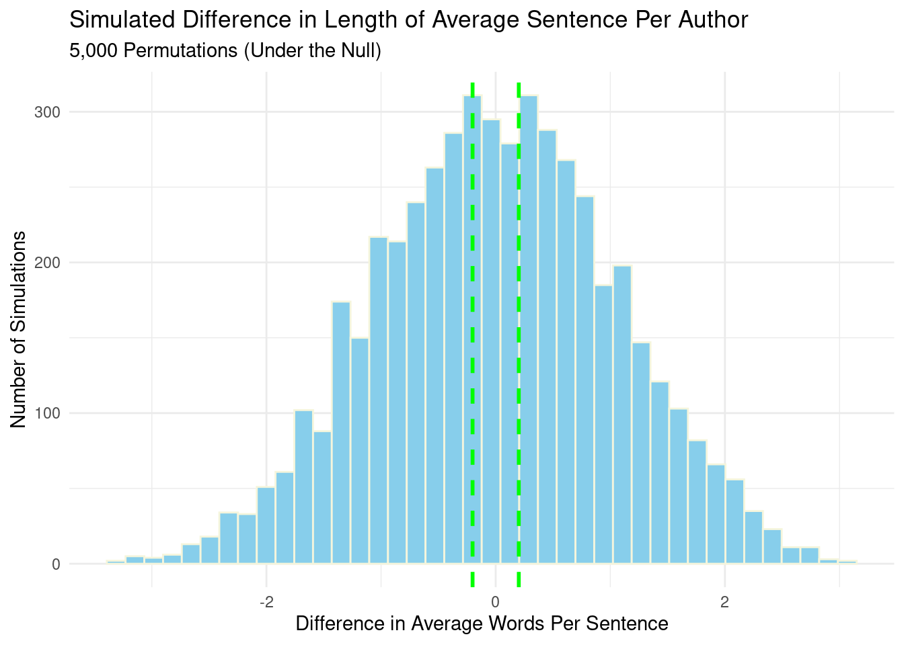

Show Code
library(FederalistPapers)
data("FederalistPapers")Simulation Study Hypothesis Test: Short and Sweet, or Long-winded?
For this project, I decided to complete option A and conduct a hypothesis test simulation study. I will simulate behavior under the null hypothesis analyzing average sentence length of the main authors of the Federalist Papers (Alexander Hamilton and James Madison), which were 85 essays written between 1787-1788 under the pseudonym Publius. As a (former) politics major these papers are important to me, because I had to read all of them in Intro to American Government. For those who are not politics majors, the Federalist Papers were critical to public acceptance of the U.S. Constitution, leading to its eventual ratification. They were written to explain the Constitution and its benefits to the populace. *Note: Although there were three authors, because John Jay only wrote 5 essays he has been excluded from this study.
I am investigating sentence length because it is one indication of writing style, as some people tend to write more “matter-of-fact” and to the point, while others may write “long, beautiful prose”. For those that do not have the time or energy to read the Federalist Papers in their entirety (increasingly common in our 2026 society), I have constructed this analysis to determine the writing style of the authors. For those inspired, I hope this analysis may spark an interest in reading the actual texts.
I’ve loaded the data from a public GitHub upload by Nicholas Horton.
library(FederalistPapers)
data("FederalistPapers")library(dplyr)
library(ggplot2)
library(purrr)
library(stringr)
library(tidyr)
# view datasets in package
data(package = "FederalistPapers")
# combine data
essay_data <- FederalistPapers |>
filter(
author == "Hamilton" | author == "Madison",
str_to_lower(disputed) == "no"
) |>
arrange(paper, line_number) |>
group_by(paper, author, title) |>
summarize(
essay_text = paste(text, collapse = " "),
.groups = "drop"
)
head(essay_data)# A tibble: 6 × 4
paper author title essay_text
<dbl> <chr> <chr> <chr>
1 1 Hamilton FEDERALIST No. I. General Introduction "THE FEDE…
2 6 Hamilton FEDERALIST No. VI. Concerning Dangers from Dissensi… "THE FEDE…
3 7 Hamilton FEDERALIST No. VII. The Same Subject Continued (Con… "THE FEDE…
4 8 Hamilton FEDERALIST No. VIII. The Consequences of Hostilitie… "THE FEDE…
5 9 Hamilton FEDERALIST No. IX. The Union as a Safeguard Against… "THE FEDE…
6 10 Madison FEDERALIST No. X. The Same Subject Continued (The U… "THE FEDE…table(subset(essay_data, select = author, drop = TRUE))
Hamilton Madison
51 14 sentence_data <- essay_data |>
mutate(
sentences = map(
essay_text,
~ str_split(.x, "(?<=[.!?])\\s+")[[1]]
)
) |>
unnest_longer(sentences, values_to = "sentence") |>
mutate(
sentence = str_trim(sentence),
word_count = str_count(sentence, "\\b[[:alpha:]]+\\b")
) |>
filter(word_count > 0)essay_lengths <- sentence_data |>
group_by(paper, author, title) |>
summarize(
average_sentence_length = mean(word_count),
number_of_sentences = n(),
.groups = "drop"
)
head(essay_lengths)# A tibble: 6 × 5
paper author title average_sentence_len…¹ number_of_sentences
<dbl> <chr> <chr> <dbl> <int>
1 1 Hamilton FEDERALIST No. I. G… 31.4 52
2 6 Hamilton FEDERALIST No. VI. … 26.9 76
3 7 Hamilton FEDERALIST No. VII.… 26.5 88
4 8 Hamilton FEDERALIST No. VIII… 27.0 77
5 9 Hamilton FEDERALIST No. IX. … 29.6 68
6 10 Madison FEDERALIST No. X. T… 32.6 93
# ℹ abbreviated name: ¹average_sentence_length#number of papers per author
essay_lengths |>
count(author)# A tibble: 2 × 2
author n
<chr> <int>
1 Hamilton 51
2 Madison 14#summary of average sentence lengths
essay_lengths |>
group_by(author) |>
summarize(
average = mean(average_sentence_length),
median = median(average_sentence_length),
.groups = "drop"
)# A tibble: 2 × 3
author average median
<chr> <dbl> <dbl>
1 Hamilton 32.4 32.1
2 Madison 32.6 32.4set.seed(47)
n_simulations <- 5000
null_differences <- map_dbl(
1:n_simulations,
~ simulate_null(essay_lengths)
)
#qualtiy check
head(pull(sentence_data, sentence), 15) [1] "THE FEDERALIST."
[2] "No."
[3] "I."
[4] "General Introduction For the Independent Journal."
[5] "HAMILTON To the People of the State of New York: After an unequivocal experience of the inefficacy of the subsisting federal government, you are called upon to deliberate on a new Constitution for the United States of America."
[6] "The subject speaks its own importance; comprehending in its consequences nothing less than the existence of the UNION, the safety and welfare of the parts of which it is composed, the fate of an empire in many respects the most interesting in the world."
[7] "It has been frequently remarked that it seems to have been reserved to the people of this country, by their conduct and example, to decide the important question, whether societies of men are really capable or not of establishing good government from reflection and choice, or whether they are forever destined to depend for their political constitutions on accident and force."
[8] "If there be any truth in the remark, the crisis at which we are arrived may with propriety be regarded as the era in which that decision is to be made; and a wrong election of the part we shall act may, in this view, deserve to be considered as the general misfortune of mankind."
[9] "This idea will add the inducements of philanthropy to those of patriotism, to heighten the solicitude which all considerate and good men must feel for the event."
[10] "Happy will it be if our choice should be directed by a judicious estimate of our true interests, unperplexed and unbiased by considerations not connected with the public good."
[11] "But this is a thing more ardently to be wished than seriously to be expected."
[12] "The plan offered to our deliberations affects too many particular interests, innovates upon too many local institutions, not to involve in its discussion a variety of objects foreign to its merits, and of views, passions and prejudices little favorable to the discovery of truth."
[13] "Among the most formidable of the obstacles which the new Constitution will have to encounter may readily be distinguished the obvious interest of a certain class of men in every State to resist all changes which may hazard a diminution of the power, emolument, and consequence of the offices they hold under the State establishments; and the perverted ambition of another class of men, who will either hope to aggrandize themselves by the confusions of their country, or will flatter themselves with fairer prospects of elevation from the subdivision of the empire into several partial confederacies than from its union under one government."
[14] "It is not, however, my design to dwell upon observations of this nature."
[15] "I am well aware that it would be disingenuous to resolve indiscriminately the opposition of any set of men (merely because their situations might subject them to suspicion) into interested or ambitious views." ggplot(
essay_lengths,
aes(x = author, y = average_sentence_length, fill = author)
) +
geom_boxplot(alpha = 0.7) +
geom_jitter(width = 0.15, alpha = 0.6) +
labs(
title = "Average Sentence Length by Author",
subtitle = "One Point Per Essay",
x = "Author",
y = "Average Words Per Sentence",
fill = "Author"
) +
theme_minimal()
Graph Description: The boxplot above compares the average sentence lengths for both Hamilton and Madison across their Federalist papers, with each point representing a single essay. This allows us to analyze who wrote longer sentences in their essays, on average.
author_means <- essay_lengths |>
group_by(author) |>
summarize(
avg_length = mean(average_sentence_length),
.groups = "drop"
)
hamilton_avg <- subset(
as.data.frame(author_means),
author == "Hamilton",
select = avg_length,
drop = TRUE
)
madison_avg <- subset(
as.data.frame(author_means),
author == "Madison",
select = avg_length,
drop = TRUE
)
observed_difference <- hamilton_avg - madison_avg
observed_difference[1] -0.2016115#calculate p-value
p_value <- (
sum(abs(null_differences) >= abs(observed_difference)) + 1
) / (n_simulations + 1)
p_value[1] 0.8580284null_data <- data.frame(
difference = null_differences
)
ggplot(null_data, aes(x = difference)) +
geom_histogram(
bins = 40,
fill = "skyblue",
color = "beige"
) +
geom_vline(
xintercept = observed_difference,
color = "green",
linetype = "dashed",
linewidth = 1
) +
geom_vline(
xintercept = -observed_difference,
color = "green",
linetype = "dashed",
linewidth = 1
) +
labs(
title = "Simulated Difference in Length of Average Sentence Per Author",
subtitle = "5,000 Permutations (Under the Null)",
x = "Difference in Average Words Per Sentence",
y = "Number of Simulations"
) +
theme_minimal()
The above histogram illustrates the distribution of differences in average sentence length from 5,000 simulations under the null hypothesis (“Hamilton and Madison wrote sentences of the same average length in their papers”). For each simulation, the author labels were randomly shuffled to illustrate the differences that may occur if Hamilton and Madison wrote sentences of similar length.
The x-axis shows the difference in average words per sentence, while the y-axis shows the number of simulations which produced each difference. The dashed line on the histogram with the dashed lines representing the observed differences. The green dashed line represents the observed difference and negative observed difference, indicating that any difference between the two authors falling within the lines may have occured by random chance, while those observed differences that fall outside of this boundary are unlikely to be due to chance alone. This visualizes a 2-sided p-value.
The results of my analysis indicated that Hamilton had an average sentence length of _____ words, and Madison wrote and average of _____ words per sentence. The observed difference between the two was ____. Out of the ___ Federalist Papers, Hamilton wrote ____ and Madison wrote ____ (the ____ by John Jay are not included in this analysis). My permutation test (comparing average sentence length across essays) produced a p-value of 0.86, which fails to reject the null.
For this project, I analyzed the writing patterns for Hamilton’s and Madison’s essays that make up the Federalist Papers. To do this, I cleaned the original data (uploaded by Nicholas Horton), evaluated average sentence length per paper and per author, ran the simulation 5,000 times under the null hypothesis, using the simulation function and mapping, visualizing my findings through a boxplot and histogram. I also calculated the observed difference and p-value for my simulation to determine if there was statistically significant evidence to reject the null (p < 0.05), which turned out to be 0.86 (much larger than 0.05). This indicates there was not a significant difference between the sentence length of both authors.
TidyTuesday resource This data is taken from a public upload by Nicholas Horton.
Original data source This is a link to the Federalist Papers in full, from the official Library of Congress website.